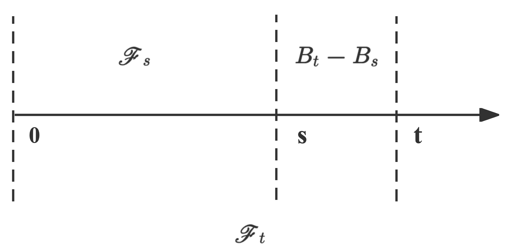

Two Applications Examples
Ex1 : Consider the Brownian motion B = ( B t , t ≥ 0 ) B = (B_t , t \geq 0) B = ( B t , t ≥ 0 ) σ \sigma σ F s = σ ( B x , x ≤ s ) \mathscr{F}_s = \sigma(B_x , x \leq s) F s = σ ( B x , x ≤ s )
∵ B t − F t m e a s u r a b l e , F t ⊂ F s ; ∴ B t − F s m e a s u r a b l e ; ∴ E ( B t ∣ F s ) = B t
\begin{aligned}
&\because B_t - \mathscr{F}_t \quad measurable, \quad \mathscr{F}_t \subset \mathscr{F}_s; \\
&\therefore B_t - \mathscr{F}_s \quad measurable; \\
&\therefore E(B_t|\mathscr{F}_s)=B_t
\end{aligned}
∵ B t − F t m e a s u r ab l e , F t ⊂ F s ; ∴ B t − F s m e a s u r ab l e ; ∴ E ( B t ∣ F s ) = B t
As we know, this relationship is over here.

From this picture, we could see that the relationship between B t − B s B_t-B_s B t − B s B s − B 0 ( F s ) B_s-B_0(\mathscr{F}_s) B s − B 0 ( F s ) independent .
We could construct increment to get the result.
∴ E ( B t ∣ F s ) = E ( B t − B s + B s ∣ F s ) = E ( B t − B s ∣ F s ) + E ( B s ∣ F s ) ⏟ B s = E ( B t − B s ) ⏟ 0 + B s ⇒ B t i s B r o w n i a n M o t i o n = B s
\begin{aligned}
\therefore E(B_t|\mathscr{F}_s) &= E(B_t-B_s+B_s|\mathscr{F}_s) \\
&=E(B_t-B_s|\mathscr{F}_s)+ \underbrace{E(B_s|\mathscr{F}_s)}_{B_s} \\
&=\underbrace{E(B_t-B_s)}_{0}+B_s \Rightarrow B_t \ is \ Brownian \ Motion \\
&=B_s
\end{aligned}
∴ E ( B t ∣ F s ) = E ( B t − B s + B s ∣ F s ) = E ( B t − B s ∣ F s ) + B s E ( B s ∣ F s ) = 0 E ( B t − B s ) + B s ⇒ B t i s B ro w nian M o t i o n = B s
Ex2 : Consider stochastic process X t = B t 2 − t , t ≥ 0 X_t = B_t^2 − t, t \geq 0 X t = B t 2 − t , t ≥ 0
We could calculate the expectation of it firstly. As we all know, B t ∼ N ( 0 , t ) B_t \sim N(0,t) B t ∼ N ( 0 , t ) B t B_t B t B t 2 B_t^2 B t 2 ( s 2 = E ( B t 2 ) − E ( B t ) 2 ) (s^2 = E(B_t^2) - E(B_t)^2) ( s 2 = E ( B t 2 ) − E ( B t ) 2 )
E ( X t ) = E ( B t 2 ) ⏟ t − t = t − t = 0
\begin{aligned}
E(X_t) &= \underbrace{E(B_t^2)}_{t}-t \\
&=t - t \\
&= 0
\end{aligned}
E ( X t ) = t E ( B t 2 ) − t = t − t = 0
Then we could get the variance. Before it ,we need to understand B t = d t B 1 B_t \overset{\text{d}}{=} \sqrt{t}B_1 B t = d t B 1 E ( B t ) = 0 , s B t 2 = t E(B_t)=0, s_{B_t}^2=t E ( B t ) = 0 , s B t 2 = t E ( B 1 ) = 0 , s B 1 2 = 1 E(B_1)=0,s_{B_1}^2=1 E ( B 1 ) = 0 , s B 1 2 = 1 E ( t B 1 ) = 0 , s t B 1 2 = t 2 × 1 = t E(\sqrt{t}B_1)=0,s_{\sqrt{t}B_1}^2=\sqrt{t}^2 \times 1=t E ( t B 1 ) = 0 , s t B 1 2 = t 2 × 1 = t B t ∼ N ( 0 , t ) B_t \sim N(0,t) B t ∼ N ( 0 , t ) t B 1 ∼ N ( 0 , t ) \sqrt{t}B_1 \sim N(0,t) t B 1 ∼ N ( 0 , t )
So let's start.
V ( X t ) = E ( X t ) 2 = E ( B t 2 − t ) 2 = E ( B t 4 − 2 t B t 2 + t 2 )
\begin{aligned}
V(X_t)&=E(X_t)^2=E(B_t^2-t)^2\\
&= E(B_t^4 - 2tB_t^2 + t^2)
\end{aligned}
V ( X t ) = E ( X t ) 2 = E ( B t 2 − t ) 2 = E ( B t 4 − 2 t B t 2 + t 2 )
Then we could use t B 1 \sqrt{t}B_1 t B 1 E ( B t 4 ) = E ( t B 1 4 ) = t 2 E ( B 1 4 ) E(B_t^4) = E(\sqrt{t}B_1^4)=t^2E(B_1^4) E ( B t 4 ) = E ( t B 1 4 ) = t 2 E ( B 1 4 ) E ( B 1 4 ) = 3 E(B_1^4)=3 E ( B 1 4 ) = 3
V ( X t ) = E ( B t 4 − 2 t B t 2 + t 2 ) = t 2 E ( B 1 4 ) ⏟ 3 t 2 − 2 t B t 2 + t 2 = 3 t 2 − 2 t 2 + t 2 = 2 t 2
\begin{aligned}
V(X_t)&=E(B_t^4 - 2tB_t^2 + t^2) \\
&= \underbrace{t^2E(B_1^4)}_{3t^2} - 2tB_t^2 +t^2 \\
&= 3t^2 - 2t^2 +t^2 \\
&= 2t^2
\end{aligned}
V ( X t ) = E ( B t 4 − 2 t B t 2 + t 2 ) = 3 t 2 t 2 E ( B 1 4 ) − 2 t B t 2 + t 2 = 3 t 2 − 2 t 2 + t 2 = 2 t 2
Now we have known that B 2 − t ∼ N ( 0 , 2 t 2 ) B^2-t \sim N(0,2t^2) B 2 − t ∼ N ( 0 , 2 t 2 )
Before it, we need to do a remark:Let f f f Y Y Y σ ( f ( Y ) ) ⊂ σ ( Y ) \sigma(f(Y)) \subset \sigma(Y) σ ( f ( Y )) ⊂ σ ( Y )
I will give a example for it.
Since we define a Ω = { 1 , 2 , 3 , 4 } \Omega = \{1,2,3,4\} Ω = { 1 , 2 , 3 , 4 } Y Y Y
Y = { 1 , i f ω i ∈ { 1 , 2 } 0 , i f ω i ∈ { 3 } − 1 , i f ω i ∈ { 4 }
Y =
\begin{cases}
1, if \ \omega_i \in \{1,2\}\\
0, if \ \omega_i \in \{3\} \\
-1, if \ \omega_i \in \{4\}
\end{cases}
Y = ⎩ ⎨ ⎧ 1 , i f ω i ∈ { 1 , 2 } 0 , i f ω i ∈ { 3 } − 1 , i f ω i ∈ { 4 }
So the σ ( Y ) = { ∅ , { 1 , 2 } , { 3 } , { 4 } , { 3 , 4 } , { 1 , 2 , 4 } , { 1 , 2 , 3 } , Ω } \sigma(Y) = \{\emptyset, \{1,2\}, \{3\},\{4\},\{3,4\},\{1,2,4\},\{1,2,3\},\Omega\} σ ( Y ) = { ∅ , { 1 , 2 } , { 3 } , { 4 } , { 3 , 4 } , { 1 , 2 , 4 } , { 1 , 2 , 3 } , Ω }
Then we give a function, f ( x ) = x 2 f(x) = x^2 f ( x ) = x 2
f ( Y ) = Y 2 = { 1 , i f ω i ∈ { 1 , 2 , 4 } 0 , i f ω i ∈ { 3 }
f(Y)=Y^2 =
\begin{cases}
1, if \ \omega_i \in \{1,2,4\}\\
0, if \ \omega_i \in \{3\}
\end{cases}
f ( Y ) = Y 2 = { 1 , i f ω i ∈ { 1 , 2 , 4 } 0 , i f ω i ∈ { 3 }
We could get σ ( Y 2 ) = { ∅ , { 3 } , { 1 , 2 , 4 } , Ω } \sigma(Y^2) = \{\emptyset, \{3\},\{1,2,4\},\Omega\} σ ( Y 2 ) = { ∅ , { 3 } , { 1 , 2 , 4 } , Ω }
∴ σ ( Y 2 ) ⊂ σ ( Y ) ∴ Y 2 − σ ( Y 2 ) m e a s u r a b l e ∴ Y 2 − σ ( Y ) m e a s u r a b l e
\begin{aligned}
&\therefore \sigma(Y^2) \subset \sigma(Y) \\
&\therefore Y^2-\sigma(Y^2) \ measurable \\
&\therefore Y^2-\sigma(Y) \ measurable
\end{aligned}
∴ σ ( Y 2 ) ⊂ σ ( Y ) ∴ Y 2 − σ ( Y 2 ) m e a s u r ab l e ∴ Y 2 − σ ( Y ) m e a s u r ab l e
Let's continue the conditional expectation.
X t − σ ( X t ) ⇒ σ ( X t ) ⊂ σ ( B t ) ⇒ F t ⊂ F s ∴ X t − F s m e a s u r a b l e ∴ E ( X t ∣ F s ) = X t
\begin{aligned}
&X_t - \sigma(X_t) \\
&\Rightarrow \sigma(X_t) \subset \sigma(B_t) \Rightarrow \mathscr{F}_t \subset \mathscr{F}_s\\
&\therefore X_t-\mathscr{F}_s \ measurable \\
&\therefore E(X_t|\mathscr{F}_s) = X_t
\end{aligned}
X t − σ ( X t ) ⇒ σ ( X t ) ⊂ σ ( B t ) ⇒ F t ⊂ F s ∴ X t − F s m e a s u r ab l e ∴ E ( X t ∣ F s ) = X t